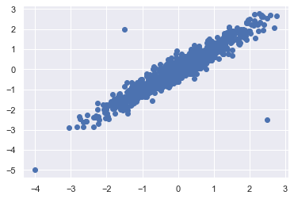
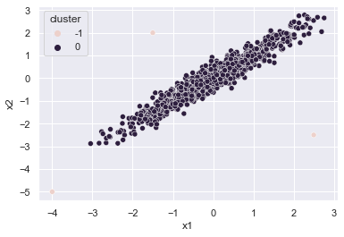

22. 【補足】機械学習を用いた異常検知 - その他の手法
22.1. DBSCAN (Density-based spatial clustering of applications with noise)
データクラスタリングアルゴリズムです。クラスタ -1 は外れ値を示します。 DBSCAN には 2 つのパラメータが必要です。
epsilon: 近傍探索の半径を定義する距離パラメータ。
min_samples: クラスタを形成するために必要な最小限の点数。
すべてのデータは、コア点、境界点、ノイズ点（外れ値）に分類されます。
コア点：自身の半径内に min_samples 数を持つ点
境界点：コア点の半径内にあるが、自身の半径内の他の点が min_samples 数よりも少ない点
ノイズ点：コア点でも境界点でもない点
22.2. 実装
[1]:
import numpy as np
import pandas as pd
import matplotlib.pyplot as plt
import seaborn as sns
sns.set()
[2]:
# データの準備
np.random.seed(0)
x1 = np.random.normal(0, 1, 1000)
x2 = x1 + np.random.normal(0, 0.3, 1000)
x = np.stack([x1, x2], axis=1)
anomaly = np.array([[-4, -5], [-1.5, 2], [2.5, -2.5]])
data = np.concatenate([x, anomaly], axis=0)
[3]:
plt.scatter(data[:, 0], data[:, 1])
[3]:
<matplotlib.collections.PathCollection at 0x7fc9d14016d0>

[4]:
from sklearn.cluster import DBSCAN
# 関数
def dbscan_outliers(x, eps=0.5, min_samples=5):
outlier_detection = DBSCAN(eps=eps, min_samples=min_samples) # default eps=0.5, min_samples=5
outlier_detection.fit(x)
labels = outlier_detection.labels_
return labels
[5]:
labels = dbscan_outliers(data)
[6]:
labels
[6]:
array([ 0, 0, 0, ..., -1, -1, -1])
[7]:
np.unique(labels, return_counts=True)
[7]:
(array([-1, 0]), array([ 3, 1000]))
[8]:
data = pd.DataFrame(data, columns=['x1', 'x2'])
data['cluster'] = labels
data
[8]:
| x1 | x2 | cluster | |
|---|---|---|---|
| 0 | 1.764052 | 1.930841 | 0 |
| 1 | 0.400157 | 0.667899 | 0 |
| 2 | 0.978738 | 0.852044 | 0 |
| 3 | 2.240893 | 2.272307 | 0 |
| 4 | 1.867558 | 1.935974 | 0 |
| ... | ... | ... | ... |
| 998 | -1.147611 | -1.490181 | 0 |
| 999 | -0.358114 | -0.751405 | 0 |
| 1000 | -4.000000 | -5.000000 | -1 |
| 1001 | -1.500000 | 2.000000 | -1 |
| 1002 | 2.500000 | -2.500000 | -1 |
1003 rows × 3 columns
[9]:
sns.scatterplot(x=data['x1'], y=data['x2'], hue=data['cluster'])
[9]:
<AxesSubplot:xlabel='x1', ylabel='x2'>
